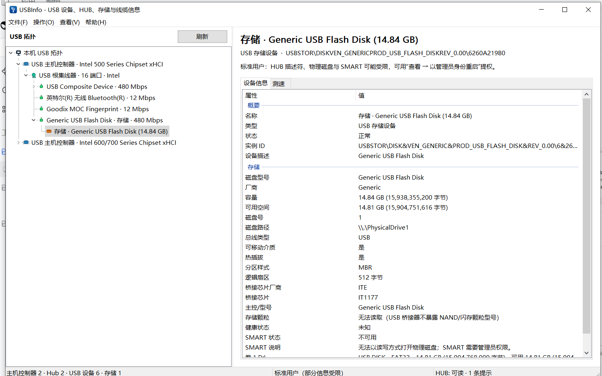

Topology map
Host controllers → root hubs → external hubs → devices → interfaces, with the PnP parent chain preserved. Branches stay readable, details stay in the right pane.
Windows 10 / 11 · C++20 · WTL
See every controller, hub, port, interface and storage link. Read the descriptors Windows exposes, check SMART health, and measure real file-level throughput — without telemetry or raw-disk writes.

What you get
One window for the physical tree, the descriptors behind it, and the storage speed in front of it.
Host controllers → root hubs → external hubs → devices → interfaces, with the PnP parent chain preserved. Branches stay readable, details stay in the right pane.
VID/PID, USB version, class and protocol, configuration, interfaces, endpoints, BOS capabilities, link speed, driver service, INF and PnP location.
Capacity, volumes, partition style, bridge chip, bus type and SMART health through ATA, SATA bridge or NVMe paths when the device exposes them.
Sequential and 4K random read/write tests with MB/s, IOPS and latency, plus a Task Manager-style live curve. File-based only — never a raw-disk write.
Right-click any value to copy it, copy the row or the whole page. Driver rows jump to the driver file or INF directory. Export a full text report in one click.
No telemetry, no network access, no background service. Standard-user mode still exposes the topology; administrator mode unlocks deeper IOCTLs and SMART.
One window, full context
Titles stay compact so large topologies stay readable. Select a node to inspect every descriptor, driver field and storage value on the right.
Speaks your language
USBInfo follows the Windows display language. Switch at runtime via View → Language — no restart, no rescan.
Translation resources are compiled into the executable as C++ tables. No language DLLs to install.
Safe by design
A diagnostic tool should not change the thing it measures. USBInfo is intentionally conservative.
Benchmarks create a temporary file on the selected volume, flush it, measure, then delete it.
USB data stays on the machine. Nothing is uploaded.
Missing cable E-Marker, hidden NAND and bridge-dependent SMART are reported as unavailable — never invented.